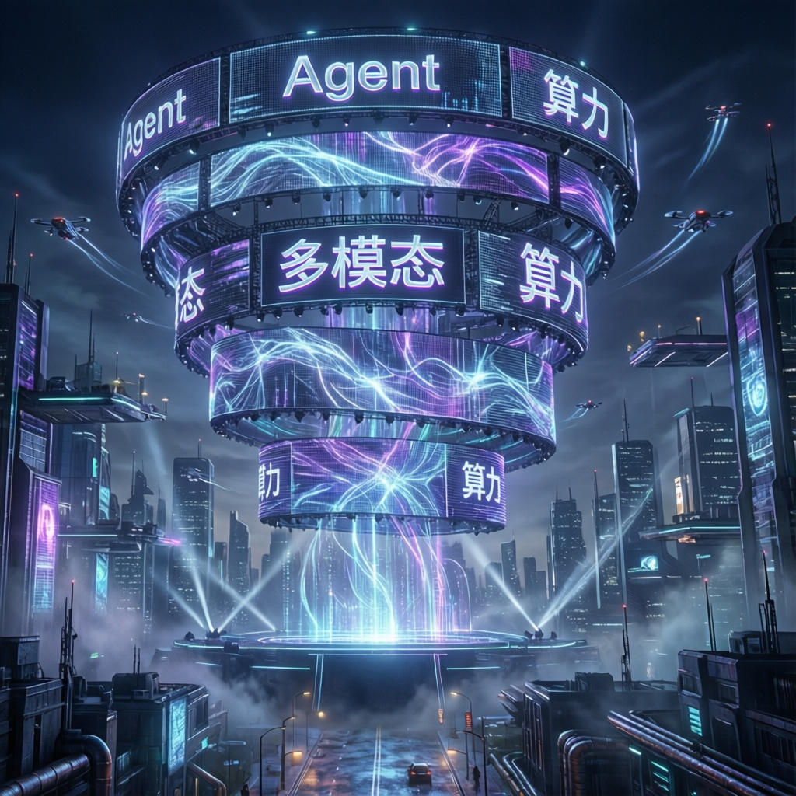

第四屆中國AIGC產業峰會｜18位重磅嘉賓｜Agent、多模態、應用、算力一天睇盡｜北京·金茂萬麗酒店

2026 年 AI 產業已經進入全面落地階段，「Agent 是不是未來」這個問題的答案已不言而喻。第四屆中國 AIGC 產業峰會以「一天看盡 Agent、多模態、應用與算力」為主題，匯聚 18 位行業領袖，從智譜、商湯、百度、螞蟻、崑崙萬維、MiniMax 等頭部企業，到亞馬遜雲科技、硅谷 Fusion Fund 的全球視角，再到學界與開源前沿的復旦邱錫鵬、港大黃超，共同探討 2026 年最值得關注的 AI 話題。
亮點一：Agent 商業化落地
「Agent 不是未來，是現在」——智譜高級副總裁吳瑋杰將分享 Agent 商業化落地的最新實戰。亞馬遜雲科技技術總監王曉野聚焦如何跨越 Agent 落地鴻溝。港大助理教授黃超（HKUDS GitHub 累計超 24 萬 Star，全球 Top50）從學術與開源前沿探討 AI Agent 範式變革的挑戰與機遇。盛大集團副總裁鄧亞峰分享長期記憶驅動的自進化如何讓 AI 從「工具」演化為可持續成長的數字生產力系統。
亮點二：模型能力邊界擴張
商湯科技首席科學家林達華分享多模態模型如何從「看懂」和「生成」進化到空間智能新階段。螞蟻靈波科技首席科學家沈宇軍探討 AI 2.0 下半場從 AIGC 到 AIGA（AI Generated Action）的產業邏輯重寫京東 JoyInside 業務負責人戴文軍將命題推向物理世界，AI 從屏幕走進真實終端。復旦大學邱錫鵬教授分享 MOSS 多模態模型及其推理優化最新進展。
亮點三：細分賽道應用實踐
亮點四：算力範式重構
2026 年算力叙事從「訓練驅動」轉向「推理驅動」。Fusion Fund 創始合夥人張璐從全球資本與產業雙重視角解讀算力重構。國產算力這邊，太初元碁高級副總裁洪源探討國產算力如何筑基 Token 智能新未來。
文娛、辦公、企業、醫療……每一個細分賽道裡，都已經有人開始把案例端上桌了。從 Agent 商業化落地到多模態空間智能，從 AIGC 應用實踐到算力範式之變，2026 年的 AI 產業正在全面從概念走向實際應用。
趣丸科技莊明浩、MarsWave 馮雷、EvoMap 張昊陽三位一線深度玩家，探討 Agent 產品的不確定性與非共識機遇。
智譜、商湯、百度、螞蟻、崑崙萬維、MiniMax、亞馬遜雲科技、復旦、港大等產學研一線領袖雲集。
2026 年值得關注的 AIGC 企業與產品獎項，以及中國 AIGC 應用全景圖譜，全面展示市場格局。
硅谷 Fusion Fund 張璐帶來全球資本與產業的雙重視角，解讀算力叙事的範式變革。
復旦邱錫鵬教授主持研發的 MOSS 系列高影響力開源大模型，學術與工程結合的硬核內容。
| 嘉賓 | 公司/機構 | 職位 | 核心話題 |
|---|---|---|---|
| 方漢 | 崑崙萬維 | 董事長兼CEO | AIGC 應用實踐 |
| 吳瑋杰 | 智譜 | 高級副總裁 | Agent 商業化落地 |
| 林達華 | 商湯科技 | 執行副總裁、首席科學家 | 多模態與空間智能 |
| 邱錫鵬 | 復旦大學 | 特聘教授、模思智能創始人 | MOSS 多模態模型 |
| 黃超 | 香港大學 | 助理教授、博士生導師 | AI Agent 開源前沿 |
| 張璐 | Fusion Fund | 創始合夥人 | 算力範式重構 |
「如果說去年大家還對『Agent 是不是未來』持觀望態度，那麼 2026 年，這個問題的答案已經不言而喻。」
— 36氪 峰會預告第四屆中國 AIGC 產業峰會正式召開，18 位重磅嘉賓主題演講與圓桌討論。
智譜、亞馬遜雲科技、港大、盛大等嘉賓探討 Agent 商業化落地與模型能力邊界擴張。
崑崙萬維、風行在線、百度、MiniMax、京東、太初元碁等實戰派分享各賽道 AI 應用與算力重構。
2026 年值得關注的 AIGC 企業獎項、AIGC 產品獎項、以及中國 AIGC 應用全景圖譜發布。
從智譜的 Agent 商業化落地，到商湯的多模態空間智能；從港大黃超的開源生態，到復旦邱錫鵬的 MOSS 大模型；從崑崙萬維的 AIGC 實踐，到太初元碁的國產算力——本屆峰會幾乎涵蓋了 2026 年 AI 產業最值得關注的所有主線。
當 AI 從「被討論的對象」變成「正在被使用的工具」，一場從數字到物理、從內容到行動、從訓練到推理的全面範式變革正在發生。2026 年 5 月 20 日，北京金茂萬麗酒店，一天時間，把這一年 AI 產業最值得關注的人、事、判斷，一次性講清楚。